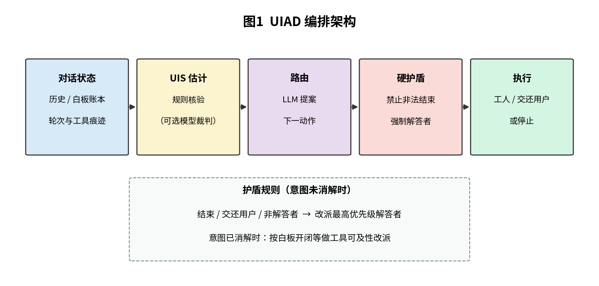
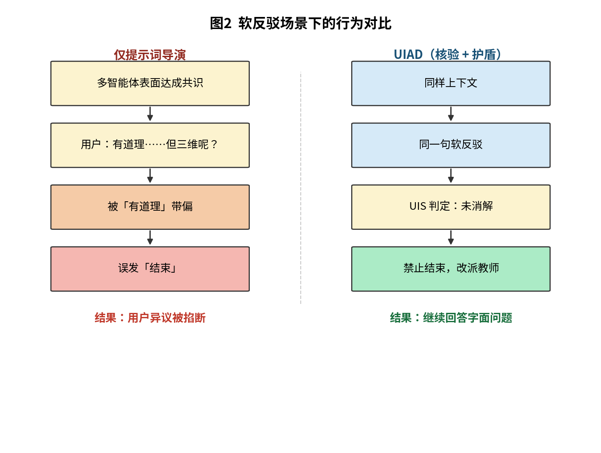
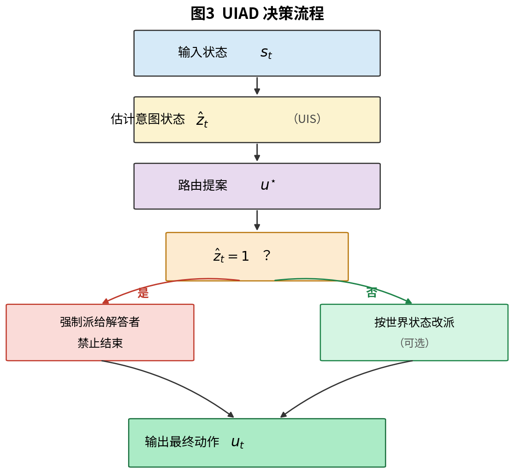
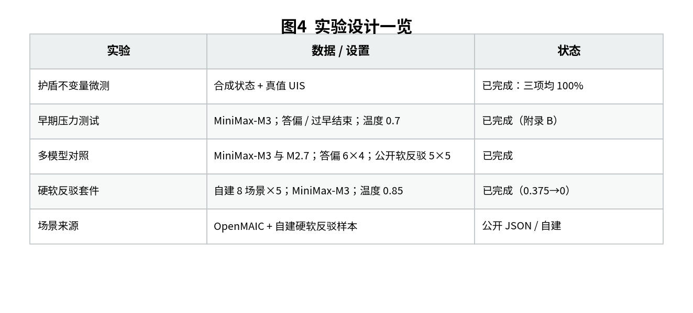
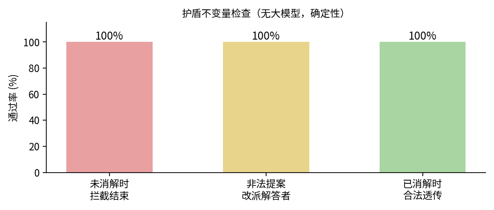
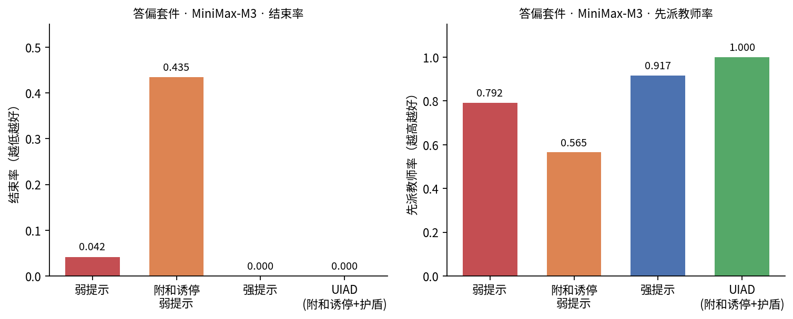
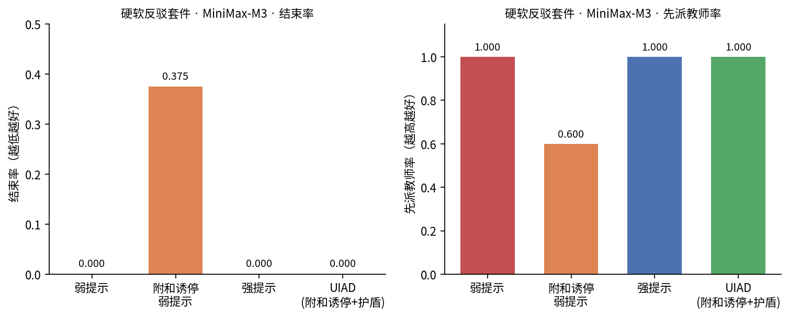

Constraining Premature Termination in Multi-Agent Systems via Intent State (UIAD)
多智能体系统中常有编排模块（「导演」）：决定下一发言者，以及本轮是否结束。结束一旦误判，用户刚提出的疑问可能尚未得到认真回应，系统便已停止。智能体还能改写白板、调用工具时，损失更大——后续纠错路径也会一并切断。
常见补救是在导演提示词中写「问题未答完不要结束」。这不够稳。用户先说「我同意」再抛出新问题，或同伴聊偏题，导演都可能误判。本文将关键收窄为一条可检查的条件：最近一句用户话是否已被实质性回应。 为此实现 UIAD（Unresolved-Intent-Aware Director）：先把「尚未答完」写成系统可读状态（记为 UIS），再决定谁发言；意图仍未消解时，运行时护盾硬性禁止「结束」，必要时将话筒交给指定解答者。
在 OpenMAIC 场景与自建硬软反驳套件上，以 MiniMax-M3 做对比，并如实记录 MiniMax-M2.7 解析不可用的情况。附和诱停是一条故意会犯错的压力基线：答偏套件结束率 0.435，硬软反驳套件结束率 0.375；加上 UIAD 护盾后两边都降到 0，先派教师率升到 1.0。公开软反驳原切片几乎人人都不结束。这说明：要看出方法差别，基线得会犯错，场景也得够难。
关键词： 多智能体系统；对话编排；过早结束；意图状态；运行时护盾
多智能体系统通常在一组工作智能体之上再放一个导演。导演大致只能做三件事：指定下一个智能体、将发言权交还用户，或结束本轮。真正麻烦的是第三种——过早结束：用户问题尚未被认真答完，系统却已经停止。若系统还能改写白板、调用工具，损失更大：后续改写与纠错的机会也会一起丢掉。
举个常见例子。各方刚就「天安门平面图是不是轴对称」说得较为一致，用户却说：「平面图对称，我同意；可建筑是三维的，还能说对称吗？」前半句像附和，后半句才是新问题。只靠提示词的导演，很容易被「我同意」带偏。还有一类失败是答偏：用户要公式或明确判断，同伴却聊相邻概念；导演以为「话题推进了」，于是结束，或把话筒递给不适合回答的人。
常见补救是再往提示词里加几句「别急着结束」。这些话只是软提醒：模型采样时可能不听，表面共识的措辞也会抬高「可以结束」的概率。更直接的做法是：把尚未消解的用户意图写成系统可读状态，并用运行时规则挡住不该发生的结束，而不是继续堆提示词。
本文主要做了四件事：
补充一句：OpenMAIC 课堂只是测试环境。我们关心的是多智能体怎么编排，不是做教育产品介绍。
多智能体框架。 AutoGen、CAMEL、MetaGPT、AgentVerse、ChatDev 等推动了多角色协作；Generative Agents 更关注长期社会仿真。这些工作里，「什么时候停」往往交给外层循环或零散停止词，很少把「用户问题还没答完」做成硬状态。
带工具的智能体。 ReAct、Toolformer 把说话和行动连起来。工具会改共享白板、文档或代码时，导演不仅要选人，还要看这个动作现在有没有用。本文场景里明确带着白板账本。
编排运行时。 LangGraph 一类系统常见「选下一个节点」。我们关心的是：人突然插话、先附和再质疑、同伴答偏时，这个选择还靠不靠谱。
护盾与约束。 安全领域常用运行时护盾挡住危险动作。UIAD 把类似想法用到编排上：把「结束」当成特权动作，意图没消解就不能放行。
多角色交互系统。 MAIC/OpenMAIC 提供教师、同伴和工具共存的课堂。我们借用它的公开场景做测试床，贡献点仍在编排，不在教学内容评估。
先约定记号。工作智能体集合记为 。每个智能体有角色 和可用工具 。用户记为 。第 轮能看到的状态是
其中 是带身份标签的对话历史， 是本轮已发言摘要（含工具痕迹）， 是白板账本， 是轮次， 表示白板是否打开。
导演动作只能是
选某个 就是让该智能体发言；选 是将发言权交还用户；选 是结束。
先检查最近一句用户话有没有被认真答完。设 是最近一句用户话。定义
什么叫实质性回应？要出现在 之后，并且满足其一：直接回答请求（公式、判断、步骤、定义）；或者信息不够时，针对缺的信息追问。只说「好的」「有意思」、旁侧延展、同伴猜测，都不能把 清掉。 表示意图还开着；这个量记为 UIS。
过早结束就是：
首轮答偏则是： 时，第一次回应却交给了非解答角色，或直接交还用户。
把导演写成一次大模型调用 时，就算提示词写了「没答完别结束」，它仍是随机生成。用户先附和再质疑，容易触发「对话好像结束了」的模板；同伴跑题，又容易让导演以为「主题覆盖了」。所以提示词是劝告，不是硬规矩。
UIAD 把原来的单体导演拆成三块：意图估计、路由、硬护盾（图1）。名字来自 Unresolved-Intent-Aware Director，意思是编排时始终盯着「用户问题还没答完」这件事。

图1 UIAD 编排架构：先看意图，再路由，最后用护盾卡住不合法动作。
先判断最近用户话是否还开着。可以用两套办法。
规则核验（主路径）。 按身份切开对话，找到最后一句用户话，再看后面智能体有没有实质性回答。如果这句话本身就是「先让步、再质疑」，即使前面已经表面达成一致，也强制判成未消解。
模型核验（可选）。 让裁判模型给出 resolved / unresolved / underspecified。规则覆盖不到时再用；一旦判成未消解，不允许绕过护盾。
部署时偏保守：宁可多续一会儿，也不要漏掉过早结束。
路由仍可用大模型，但要看到 。意图还开着时，降低「结束」的采样倾向，并优先挑解答集合
（没有教师角色时，换成任务指定的专家）。同伴一般等意图消解后再说。
图2对比了「只靠提示词」和「UIAD」在软反驳下的差别。

图2 软反驳时：提示词导演可能误结束；UIAD 会禁止结束，并优先叫解答者。
护盾不改模型偏好，只改系统允许什么动作。设路由提出的动作是 。护盾再输出最终动作：
其中 是解答集合里优先级最高的角色。简单说：
提示词是劝告；护盾是系统禁令。如果偶尔把已答完的问题误判成未消解，对话可能变长，这可以用过度续聊率来量。
流程图见图3。

图3 未消解则禁止结束，并强制叫解答者。
白板开着时，有些只对幻灯片生效的动作其实看不见。护盾可以把人改派到当前真正用得上工具的角色，或先处理「关白板」。这样意图消解和环境能不能操作是绑在一起的，不只是纯聊天排班。
UIAD 可以挂在
这类单轮导演—工人图上。每次请求最多生成一次工人回复；跨轮靠历史标签维持 UIS。
提示词补丁有用，但还在模型采样过程内部，表层措辞就能压过去。UIAD 的关键是拆开：先核验，再路由，最后护盾。最有信息量的区间，往往是路由已经被诱停提示带偏的时候——这时候护盾才看得出用处。
另外加了一类 附和诱停弱提示：听到「我同意」「有道理」「已经达成共识」就更倾向结束。它是一条故意设计成会失败的压力基线，专门用来逼出软偏好的漏洞，而不是当作合理部署配置。
整体安排见图4。

图4 实验安排：护盾微测、常规对比、压力测试。
教师能管幻灯片和白板，同伴多半只能用白板；账本记录绘制和开关。场景来自 OpenMAIC 公开套件，再加上自建硬软反驳样本。导演调用走 MiniMax 的兼容接口；护盾微测不需要大模型。
| 实验 | 设置 | 状态 |
|---|---|---|
| 护盾微测 | 合成状态 + 真值 UIS | 完成 |
| 早期压力测试 | MiniMax-M3；答偏 / 过早结束；温度 0.7 | 完成（附录 B） |
| 多模型对照 | MiniMax-M3 与 M2.7；答偏 6×4；公开软反驳 5×5 | 完成 |
| 硬软反驳套件 | 自建 8 场景×5；MiniMax-M3；温度 0.85 | 完成（0.375→0） |
| 盲测材料 | 20 对匿名样本 | 表已备好，胜率等人填 |
先不跑大模型，只检查三条硬规矩，结果见图5和表1。

图5 护盾不变量检查。
表1 护盾微测
| 检查项 | 通过率 |
|---|---|
| 未消解时拦截「结束」 | 100% |
| 非法提案改派解答者 | 100% |
| 已消解且合法提案原样通过 | 100% |
估计正确时，护盾不依赖路由模型的采样结果，该拦截即拦截。
6 个场景，每场景 4 次，温度 0.7。附和诱停组因 1 次断线剩 23 次有效样本，其余都是 24 次。见图6、表2。

图6 答偏套件上的结束率与先派教师率。
表2 答偏套件（MiniMax-M3）
| 方法 | 结束率 ↓ | 先派教师率 ↑ |
|---|---|---|
| 弱提示导演 | 0.042 | 0.792 |
| 附和诱停弱提示 | 0.435 | 0.565 |
| 强提示导演 | 0.000 | 0.917 |
| UIAD（弱提示+护盾） | 0.000 | 1.000 |
| UIAD（附和诱停+护盾） | 0.000 | 1.000 |
普通弱提示很少误结束。但一旦提示词鼓励「听到附和就可以停」，误结束升到约 43.5%，先派教师率降至 56.5%。同一批提案过 UIAD 后，结束率变为 0，先派教师率回到 1.0。强提示本身已经不错；UIAD 的价值是：路由就算被带偏，系统仍能兜住。
公开过早结束套件（5 个场景）上，MiniMax-M3 几乎从不误结束，方法难以区分。于是我们另建了 硬软反驳套件（8 个场景）：前面大家表述高度收束，用户最后一句却是「长附和 + 短句质疑」。设定：MiniMax-M3，温度 0.85，每场景 5 次，无接口错误。见图7、表3。

图7 硬软反驳套件上的结束率与先派教师率。
表3 硬软反驳套件（MiniMax-M3，8×5）
| 方法 | 结束率 ↓ | 先派教师率 ↑ |
|---|---|---|
| 弱提示导演 | 0.000 | 1.000 |
| 附和诱停弱提示 | 0.375 | 0.600 |
| 强提示导演 | 0.000 | 1.000 |
| UIAD（附和诱停+护盾） | 0.000 | 1.000 |
附和诱停下误结束 15/40（37.5%），先派教师率 60%；过护盾后变成 0 和 1.0。普通弱提示和强提示在这里仍然不误结束，说明「难」主要难在诱停话术。公开切片的天花板现象也有参考价值：基线不犯错时，「各方都好」并不能说明方法差异。
同一套脚本也测了 MiniMax-M2.7。答偏 71/72、软反驳 74/75 都被解析成 UNKNOWN，几乎拿不到合法 JSON。UIAD 会把 UNKNOWN 映射到教师，所以先派教师率看起来是 1.0，但这更像「解析失败时的兜底」，不宜和 M3 的路由纠错直接横比。
表4 多模型结束率（如实写）
| 模型 | 套件 | 弱提示 | 附和诱停 | 强提示 | UIAD（弱） | UIAD（附和诱停） |
|---|---|---|---|---|---|---|
| MiniMax-M3 | 答偏 | 0.042 | 0.435 | 0.000 | 0.000 | 0.000 |
| MiniMax-M3 | 公开软反驳 | 0.000 | 0.000 | 0.000 | 0.000 | 0.000 |
| MiniMax-M2.7† | 答偏 | 0.000 | 0.000 | 0.000 | 0.000 | 0.000 |
| MiniMax-M2.7† | 公开软反驳 | 0.000 | 0.000 | 0.000 | 0.000 | 0.000 |
† M2.7 大多不可解析；表里「结束率 0」不能理解成「它从不想结束」。跨厂商第二模型还缺密钥，没做。
我们从「弱提示决策和 UIAD 不一致」的样本里抽了 20 对，匿名比较「谁更尊重用户上一句」。胜率等人评完再填，此处不编造数字。
提示词是劝告，护盾是禁令。 表2说明：路由被诱停带偏时，禁令仍然有效。它改的是「系统允许什么动作」，不是「模型更想说什么」。
有区分度，才谈得上方法好。 公开软反驳太容易；换成硬套件并加上附和诱停后，表3才和表2同向。评测别只堆已经满分的强提示。附和诱停本身不是部署建议，而是故意做坏的压力基线。
第二模型的教训。 输出格式不稳时，指标会被解析失败拖累。先修格式或看原始文本，再谈跨模型结束率；换一家模型也还需要额外密钥。
局限。 跨厂商第二模型还没有；硬软反驳是自建样本，要防过拟合诱停话术；规则核验覆盖有限；盲测胜率未回填；白板可操作性那一支还没量化。若准备会议全文，优先补可正常解析的第二家模型，以及这 20 对盲测的人工结果。
过早结束更适合写成「带状态的约束」，而不是提示词边角料。UIAD 把意图估计、路由和硬护盾拆开：在答偏和硬软反驳的附和诱停设定下，MiniMax-M3 的误结束分别从约 43.5% 和 37.5% 降到 0，并恢复教师优先。护盾微测说明，这些规矩可以在不调用大模型时先验证清楚。后面还要补跨模型对照，以及 UIS 误判带来的过度续聊代价。
〔基金与算力。〕撰稿和制图用了 AI 辅助；表里数字来自本机调用 MiniMax API 的真实返回，没有事后编造。
[1] Wu 等. AutoGen: Enabling Next-Gen LLM Applications via Multi-Agent Conversation. COLM, 2024.
[2] Li 等. CAMEL: Communicative Agents for “Mind” Exploration of Large Language Model Society. NeurIPS, 2023.
[3] Hong 等. MetaGPT: Meta Programming for Multi-Agent Collaborative Framework. ICLR, 2024.
[4] Park 等. Generative Agents: Interactive Simulacra of Human Behavior. UIST, 2023.
[5] Yao 等. ReAct: Synergizing Reasoning and Acting in Language Models. ICLR, 2023.
[6] Schick 等. Toolformer: Language Models Can Teach Themselves to Use Tools. NeurIPS, 2023.
[7] Chen 等. AgentVerse: Facilitating Multi-Agent Collaboration and Exploring Emergent Behaviors. ICLR, 2024.
[8] Qian 等. ChatDev: Communicative Agents for Software Development. ACL, 2024.
[9] Yu 等. From MOOC to MAIC: Reshaping Online Teaching and Learning through LLM-driven Agents. JCST / arXiv:2409.03512, 2024.
[10] LangChain. LangGraph Documentation. https://langchain-ai.github.io/langgraph/
请把本文和 figures 放在同一目录；或直接打开 UIAD_paper_preview/index.html（公式已预渲染，图在同级 figures/）。
| 文件 | 说明 |
|---|---|
figures/fig1_architecture.png | 图1 |
figures/fig2_soft_objection.png | 图2 |
figures/fig3_decision_flow.png | 图3 |
figures/fig6_experiment_design.png | 图4 |
figures/fig4_shield_microbench.png | 图5（已去掉异常大空白） |
figures/fig5_stress_answering.png | 图6 |
figures/fig7_soft_rebuttal_hard.png | 图7 |
scenarios/soft_rebuttal_hard.json | 硬软反驳场景 |
eval_results/ | 原始评测结果 |
blind_preference/ | 盲测表 |
更早一轮普通弱提示（答偏 6×4，温度 0.7）里：弱提示结束率 0.125、先派教师率 0.708；强提示和 UIAD 都是结束率 0、先派教师率 1.0。方向和正文一致，但不如附和诱停分得开，所以正文以附和诱停为主证据。